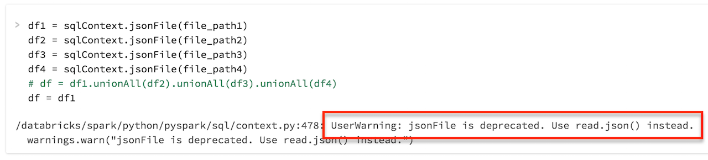
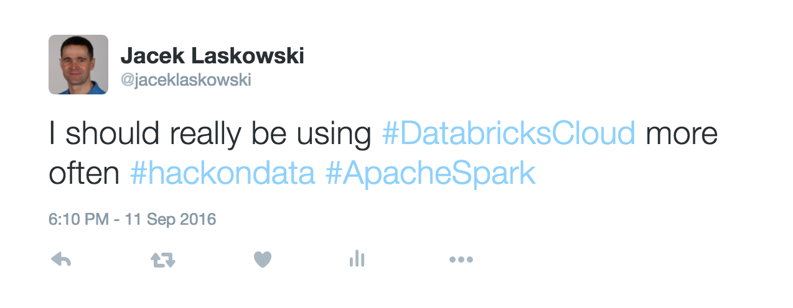

Solutions Review
HackOn(Data) / Toronto / Sept. 10-11

- Jacek Laskowski is an independent consultant
- Apache Spark and Scala exclusively for the past two years
- Partner at Value Amplify Consulting Group
- Contact me at jacek@japila.pl or @JacekLaskowski
- Set out to master Apache Kafka
- Leader of Warsaw Scala Enthusiasts and Warsaw Apache Spark / Java Champion
https://bit.ly/mastering-apache-spark

Agenda
Loading Datasets (1 of 3)
Please DON'T do this!
sc.textFile("...CSV") <-- HERE
.filter(lambda l : "ADD_NUM" not in l)
.map(parseCultureLoc)
sc.textFile("...TXT") <-- HERE
.map(parseTwitter)
.filter(lambda t : "toronto" in t['place'].lower()))
sc.parallelize(grid)
Loading Datasets (2 of 3)
Please DON'T do this!
wdat <- read.df(sqlContext,
"./ParkingTicket/weather/201*",
source = "com.databricks.spark.csv", <-- this
inferSchema = "true",
header="true", skiprows=16)
sqlContext.jsonFile(file_path1)
Loading Datasets (3 of 3)
Please DON'T do this!
Saving Datasets
Please DON'T do this!
parking_2015_withTrial_df
.coalesce(1) <------------------------- HERE
.write
.format("com.databricks.spark.csv") <-- HERE
.options(header="true")
.save("/mnt/%s/Parking/Parking_Tags_2015_and_other_data" % MOUNT_NAME)
Type Mismatch?
Please DON'T do this!

Standard Functions
Nothing here...you're on your own :-)
Transformers
- Tokenizer
- HashingTF
- VectorAssembler
- OneHotEncoder
- StringIndexer
Tooling - Git & GitHub & Source Code
- Very impressed by the variety of tools
- GitHub
- GitHub Pages for website
- Databricks Cloud
Resolution
I did learn a few things from YOU! Thanks!
Questions?
- Read Mastering Apache Spark 2
- https://bit.ly/mastering-apache-spark
- Follow @jaceklaskowski on twitter
- Review my questions and answers on StackOverflow
- Use Jacek's code at GitHub
- Read Jacek Laskowski @ Medium
- Visit Jacek Laskowski's blog